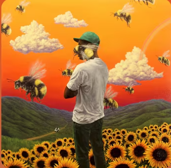

Artist: Tyler the Creator
Okay, okay, okay, okay
Okay, okay, oh
[Verse 1: Tyler, The Creator]
You live in my dream state
Relocate my fantasy
I stay in reality
You live in my dreamstate
Any time I count sheep
That's the only way we make up
You exist behind my eyelids, my eyelids
I don't wanna wake up
[Chorus: Tyler, The Creator & Kali Uchis]
20/20, 20/20 vision
Cupid hit me, cupid hit me with precision, I
Wonder if you look both ways
When you cross my mind, I said, I said
I'm sick of, sick of, sick of, sick of chasing
You're the one that's always running through my day dreams, I
I can only see your face when I close my eyes
Can I get a kiss?
And can you make it last forever?
I said I'm 'bout to go to war
And I don't know if I'ma see you again
Can I get a kiss? (Can I)
And can you make it last forever? (Can you)
I said I'm 'bout to go to war ('Bout to)
I don't know if I'ma see you again
(Uh, switch it up)
[Verse 2: Tyler, The Creator]
I said, okay, okay, okay, okie dokie, my infatuation
Is translatin' to another form of what you call it? — Love
Oh yeah, oh yeah, oh yeah, oh yeah, I ain't met you
I've been looking, stop the waiting
'fore I stop the chasing, like an alcoholic
You don't understand me, what the fuck do you mean?
It's them rose tinted cheeks, yeah it's them dirt-colored eyes
Sugar honey iced tea, bumblebee on the scene
Yeah I'd give up a bakery to have a piece of your pie
Yugh!
[Chorus: Tyler, The Creator & Kali Uchis]
20/20, 20/20 vision
Cupid hit me, cupid hit me with precision, eye
Wonder if you look both ways
When you cross my mind, I said, I said
I'm sick of, sick of, sick of, sick of chasing
You're the one that's always running through my day dreams, I
I can only see your face when I close my eyes
(So)
Can I get a kiss? (Can I get a kiss?)
And can you make it last forever? (Oh, forever)
I said I'm 'bout to go to war (Go to war)
I don't know if I'ma see you again (See you again)
Can I get a kiss? (Can I)
And can you make it last forever? (Can you)
I said I'm 'bout to go to war ('Bout to)
I don't know if I'ma see you again
[Outro: Tyler, The Creator & Kali Uchis]
Okay, okay, okay, okay
Okay, okay, okay, oh
La la, la la la la, la la
La la, la la la, la la
La la, la la la la, la la
La la, la la la la
One more time?